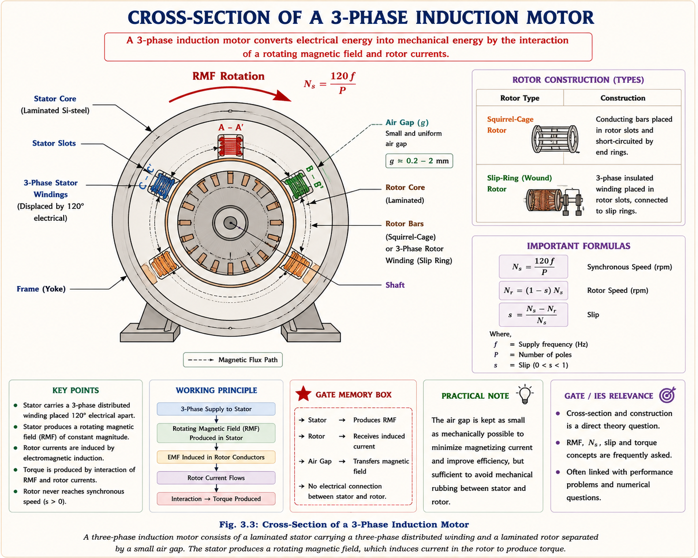
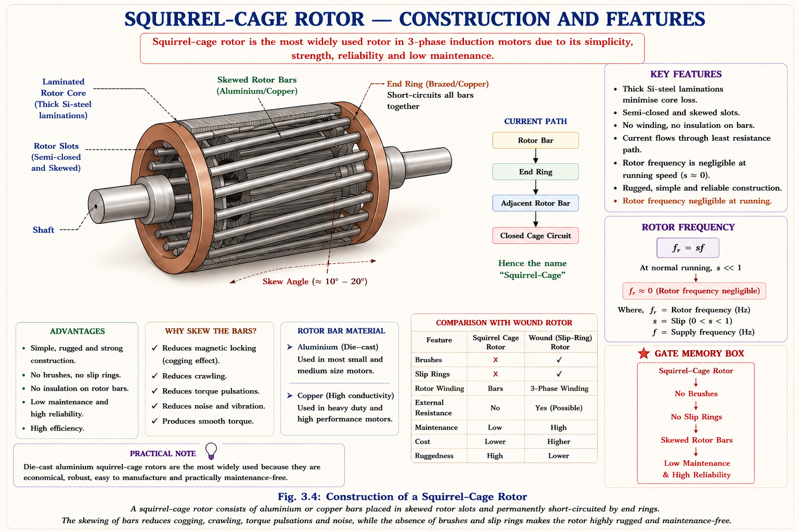
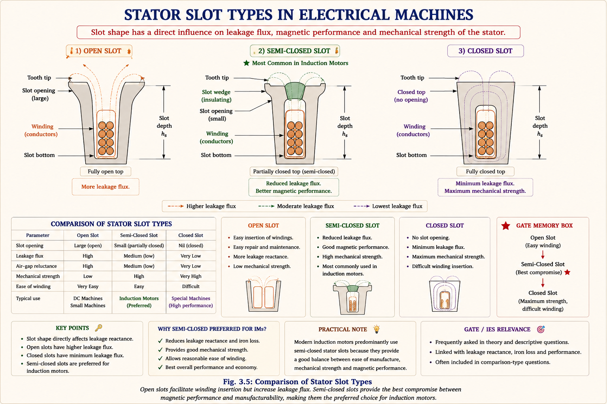
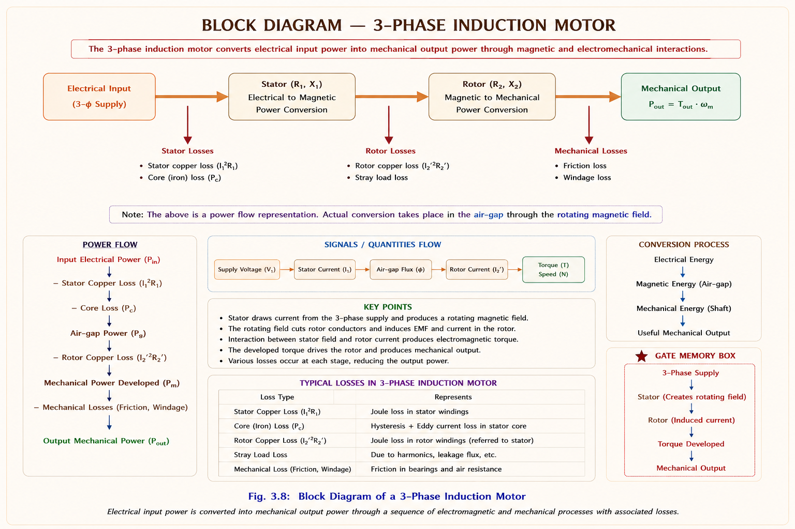

Induction motors are the most widely used electric motors in the world, accounting for nearly 70–80% of all industrial motor drives. Their dominance stems from a unique combination of simple construction, robustness, and excellent running characteristics.[1]
⚡
Key Fact
Induction motors operate on AC supply (no DC excitation needed), use electromagnetic induction for rotor excitation, and are called asynchronous machines because the rotor never runs at synchronous speed.
✅ Advantages
▸Simple, rugged construction — no commutator or brushes
▸Low cost & easy maintenance
▸Mechanically strong & reliable
▸Excellent running characteristics & good speed regulation
▸No armature reactions, no commutation sparkings
▸Operates directly from AC supply
⚠ Limitations
▸Speed control is not as straightforward as DC motors
▸Cannot run at synchronous speed (always some slip)
▸Poor starting torque (squirrel cage type)
▸Draws large starting current (5–8× rated)
▸Lagging power factor at light loads
▸Also used as generator but not preferred for power generation
3.2
Rotating Magnetic Field (RMF)
When a balanced 3-phase supply is applied to a 3-phase winding distributed with 120° spatial displacement, a net flux is produced that rotates at a constant speed — the synchronous speed — with constant magnitude equal to 1.5 times the maximum flux of each phase.[1]
🔑
Core Principle
The RMF has constant magnitude (1.5φm) and rotates at synchronous speed Ns = 120f/P. Its direction depends on the phase sequence of the supply.
Mathematical Proof of RMF
For a 3-phase supply, the instantaneous fluxes in the three phases are:
Fig 3.2 — The RMF sweeps 360° (one full revolution) for every cycle of 3-phase supply. At each instant, |φnet| = 1.5φm.
3.3
Construction — Stator & Rotor
Like all rotating electrical machines, the induction motor consists of a stationary part (stator) and a rotating part (rotor) mounted on the shaft and supported by suitable bearings. The air gap between stator and rotor is kept as small as mechanically possible to minimise the magnetising current requirement.[1]
Stator
The stator contains slots at the inner periphery, made up of silicon-steel laminations to reduce iron losses. A 3-phase winding — either star (Y) or delta (Δ) connected depending on the starting method — is placed in these slots, providing good mechanical security for the winding.

Fig 3.3 — Cross-section of 3-phase Induction Motor showing stator slots, rotor bars, and air gap.
▸Al/Cu bars placed in rotor slots without insulation
▸Bars short-circuited by end rings (brazed)
▸Slots are skewed to avoid magnetic locking
▸Simplest construction, least maintenance
▸Low starting torque; resistance cannot be varied
▸~90% of all induction motors are squirrel cage
💍 Slip Ring / Wound Rotor
▸3φ winding (star connected) similar to stator winding
▸3 terminals brought out to 3 slip rings on shaft
▸External resistance inserted for high starting torque
▸Resistance disconnected under running — metal collar
▸Expensive, complex, high maintenance
▸Used only for high starting torque applications

Fig 3.4 — Squirrel cage rotor: Al/Cu bars in semiclosed skewed slots, short-circuited by brazed end rings. No winding required.
⚠
Important
Rotor slots are skewed (twisted/inclined w.r.t. shaft axis or stator slots) to avoid locking tendency during starting (magnetic locking / cogging). Under running conditions, rotor frequency is negligible, so thick laminations are used and core losses are very low.
The phase group (also called band/belt) is the number of adjacent slots (or conductors) belonging to a same phase. The phase spread is the angle subtended by one phase group.
Slots per Pole per Phase (SPP)
\[n = \text{SPP} = \frac{\text{Total slots}}{P \times 3}\]
Phase spread = n × α
120° phase spread → nα = 120°, α = 30°, n = 4
120° vs 60° Phase Spread
Property
120° Phase Spread
60° Phase Spread
SPP (n)
n = 120°/α
n = 60°/α (combined 2 groups)
Harmonic elimination
Eliminates 3rd harmonic in line
Better volume & power ratings
Winding connection
Preferred Y (star) — 3rd harmonic cancels in line
6 phases combined to 3
Distribution factor
Kd120 < Kd60
Kd60 = 1.15 × Kd120
Preference
Eliminates 3rd harmonic content in line
Practically preferred — better ratings
ℹ
Note on 3rd Harmonic
120° phase spread eliminates 3rd harmonic in line because windings are preferred to be Y (star). The 3rd harmonic content in line is 0 even though it exists in each phase. However, 60° spread gives better volume and power ratings — hence practically preferred.
3.5
Distribution Factor & Pitch Factor
Distribution Factor (Kd)
Distribution of winding is done only to improve the shape of waveforms. The distribution factor is the ratio of EMF in distributed winding to EMF in concentrated winding.
Distribution Factor Formula
\[K_d = \frac{\text{EMF (distributed winding)}}{\text{EMF (concentrated winding)}} = \frac{\sin\!\left(\dfrac{n\alpha}{2}\right)}{n \sin\!\left(\dfrac{\alpha}{2}\right)}\]
Since sin(α/2) ≈ α/2 for small α:
\[K_d \approx \frac{\sin\!\left(\dfrac{n\alpha}{2}\right)}{\dfrac{n\alpha}{2}}\]
Short pitching coils eliminates or reduces higher-order harmonics (5th and 7th are most advantageous to eliminate). Max torque is inversely proportional to leakage reactance — hence rotor slots are designed for minimum X2 with less depth. Harmonics can also be eliminated by fractional slot windings (automatically short pitched).
Winding Factor (Kw)
Combined Winding Factor
\[K_w = K_p \times K_d\]
\[K_{d_r} = \frac{\sin\!\left(\dfrac{n r\alpha}{2}\right)}{n\sin\!\left(\dfrac{r\alpha}{2}\right)} \quad \text{(for r-th harmonic)}\]
where \(\displaystyle n\alpha = \frac{360°}{\delta}\) (phase spread in terms of slot pitch δ)
3.6
Types of Slots

Fig 3.5 — Three types of stator slots. Semi-closed is generally preferred for IMs.
Feature
Open Slots
Closed Slots
Semi-Open/Closed
Winding design, maintenance
Easy, less expensive
Difficult
Quite difficult
Leakage flux / reactance
High reluctance → less leakage, less X
High leakage flux, high X
Moderate
Magnetising current
More (large air gap)
Less (small air gap) → higher PF
Moderate
Operating PF
Low (more magnetising I needed)
Better PF
Moderate
Space harmonics
Non-uniform air gap → slot/tooth harmonics
No slot/tooth harmonics
Moderate
Preferred for
Large rating IMs, power plant generators
Low voltage, small machines
General IM (stator & rotor)
ℹ
Standard Practice
Generally preferred slots in IM (stator or rotor) are semiclosed type. Large rating machines (power plant generators, large IMs) use open type because they produce less leakage reactance and offer easy maintenance and repair works.
3.7
Principle of Operation & Slip
How the Rotor Runs
When 3-phase supply is applied to the stator, an RMF is produced at synchronous speed Ns. As this flux sweeps past the rotor, it cuts the rotor conductors and induces EMF by Faraday's law. Since the rotor is essentially a closed circuit, current flows, and these current-carrying conductors placed in the magnetic field experience a force (torque) by Lenz's law — the rotor rotates in the direction of the rotating field to oppose the cause (relative speed).
🔑
Why It Cannot Run at Synchronous Speed
The rotor tries to catch the RMF but cannot due to losses. If N = Ns, there is no relative speed, no EMF induced, no rotor current, no force, and the rotor would decelerate. So it always runs at N slightly less than Ns. It is an asynchronous machine.
Slip (s)
Slip is the difference between synchronous speed and actual rotor speed, expressed as a fraction of synchronous speed.
High Slip Approximation ((sX₂)² >> R₂²)
\[(sX_2)^2 \gg R_2^2 \implies T_F \approx \frac{sR_2}{(sX_2)^2} = \frac{R_2}{sX_2^2}\]
\[\boxed{T_F \propto \frac{R_2}{s}} \quad \text{(Torque inversely ∝ slip in high slip)}\]
Condition for Maximum Torque
Maximum Torque — Differentiate T w.r.t. s and equate to 0
Let \(y = 1/T_F = \frac{R_2^2 + (sX_2)^2}{sR_2}\), then \(\frac{dy}{ds}=0\):
\[\frac{d}{ds}\left(\frac{-R_2}{s^2} + \frac{X_2^2}{R_2}\right) = 0 \implies \frac{R_2^2}{s^2} = X_2^2\]
\[\boxed{R_2 = sX_2 \implies s_m = \frac{R_2}{X_2}}\]
Maximum torque magnitude:
\[\boxed{T_{max} \propto \frac{1}{2X_2}}\]
Tmax is independent of R₂ but the slip at which it occurs depends on R₂.
🔑
Key Results — Maximum Torque
• For maximum starting torque: R₂ = X₂ (slip sm = 1)
• For maximum running torque: R₂ = s·X₂
• Tmax ∝ 1/(2X₂) — inversely proportional to rotor leakage reactance at standstill
• Tmax is independent of rotor resistance — adding Rext shifts the peak, not the magnitude
• Generally: Tmax ≈ 2–3 TF (full load torque), Tst ≈ 1.5 TF
Fig 3.7 — Torque-slip characteristic curves for different rotor resistances. Tmax magnitude is the same; only the slip at which it occurs shifts with R₂.
▸T-s curve is essentially a straight line in the operating (low slip) region
▸Tmax is independent of R₂ — only slip at which it occurs changes
▸If R₂+Rext = X₂, motor starts with maximum torque (sm=1)
▸Motors have excellent overload capability (short duration)
🧮 Typical Values
▸Tmax ≈ 2–3 TF (full load torque)
▸Tst ≈ 1.5 TF (squirrel cage)
▸Braking region: Re >> X₂, sm > 1
▸Motor always operates below sm for stable operation
3.10
Power Stages & Efficiency

Fig 3.8 — Power flow in an Induction Motor. No losses in the air gap. Rotor only has Cu losses (core losses negligible at running).
Basis: Nagrath & Kothari [1], §5.7
Power Stage Equations
\[\text{Stator I/P} - \text{Stator Loss} = \text{Air Gap Power} = P_g\]
\[\text{Rotor Cu Loss} = s \cdot P_g\]
\[\text{Rotor O/P} = (1-s) \cdot P_g\]
\[\eta_{rotor} = \frac{\text{Rotor O/P}}{\text{Rotor I/P}} = (1-s) = \frac{N}{N_s} \quad \text{(Approx. η of IM neglecting mech. losses)}\]
\[\text{Torque developed:} \quad T_g = \frac{60}{2\pi N_s} \cdot P_g = \frac{60}{2\pi N_s} \cdot \frac{\text{Rotor Cu loss}}{s}\]
💡
Important Relationships
Core loss (iron) + Mechanical loss (friction + windage) = Constant losses. If an IM is running at 950 rpm in India (Ns=1000 rpm), its approximate η = 95% (s=0.05, η≈1-s neglecting constant losses). Rotor losses are only copper losses — no core losses since rotor frequency is negligible during normal running.
Normal operating slip is 1–5%. Rotor frequency = s × f = 0.04 × 50 = 2 Hz. Rotor speed in terms of slip: N = Ns(1−s) = 1500×0.96 = 1440 rpm.
GATE EE 2018The condition for maximum torque in a 3-phase induction motor is:2018
(A) R₂ = X₂/s
(B) R₂ = sX₂
(C) R₂ = s²X₂
(D) R₂ = X₂
Explanation: Maximum torque occurs when sm = R₂/X₂, i.e., R₂ = smX₂. Option (B) is correct. Note: for maximum starting torque (s=1), condition is R₂ = X₂ which is option (D) — not to be confused!
IES E&TWhy is the squirrel cage IM preferred over slip-ring IM in ~90% applications?Classic
Answer: Squirrel cage IM is preferred because: (1) Simpler, more robust construction; (2) No brushes, slip rings — less maintenance; (3) Lower cost; (4) Better running characteristics — lower losses; (5) Higher efficiency; (6) Excellent running conditions.
Slip-ring IM is used only when high starting torque is required (cranes, hoists, compressors, lifts) where external resistance is inserted in the rotor circuit.
GATE EE 2020In a 3-phase IM, rotor copper loss = 400 W, slip = 0.05. Find the air gap power and mechanical power developed.2020
Solution:
Rotor Cu loss = s × Pg → Pg = 400/0.05 = 8000 W = 8 kW
Mechanical power = (1−s) × Pg = 0.95 × 8000 = 7600 W = 7.6 kW
🔑
Power Ratio Rule
Rotor Cu loss : Air Gap Power : Mechanical O/P = s : 1 : (1−s). This ratio is crucial for all GATE power stage questions.
IES E&T 2019What is the effect of increasing rotor resistance on (i) starting torque (ii) maximum torque magnitude?2019
Answer:
(i) Starting torque increases (up to R₂=X₂ condition, after which it decreases) — adding external resistance shifts sm toward s=1, improving starting torque.
(ii) Maximum torque magnitude remains unchanged — Tmax ∝ 1/(2X₂) is independent of R₂. Only the slip at which maximum torque occurs (sm = R₂/X₂) increases proportionally with R₂.
GATE EEA 6-pole, 50 Hz IM has distribution factor Kd = 0.955 and pitch factor Kp = 0.966. Find the winding factor.Classic